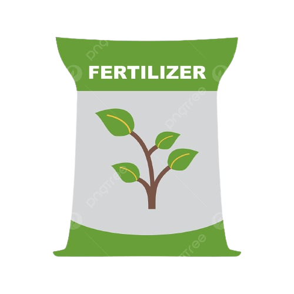

Suitable factors required for the cultivation of rice are : 1. Temperature, 2. Rainfall, 3. Soils, 4. Fertilizers and 5.Labour !
Temperature: 
Rice is a tropical crop and grown where the average temperature during the growing season is between 20°C and 27°C.Abundant sunshine is essential during its four months of growth. The minimum temperature should not go below 15°C as germination cannot take place below that temperature.
Rainfall:
Paddy requires more water than any other crop. As a result, paddy cultivation is done only in those areas where minimum rainfall is 115 cm. Although the regions are having average annual rainfall between 175—300 cm are the most suitable.
Soils:
Paddy is grown in wide range of soil, from the podzolic alluvium of China to the impermeable heavy clay of central Thailand. Fertile riverine alluvial soil is best for rice cultivation.Clayey loam soil in monsoon land is considered to be the best for rice cultivation as water retention capacity of this soil is very high. Rice is also grown in saline areas of deltic region. Rice cultivation needs high fertilizer application.
Fertilizers:
Paddy requires three essential plant nutrients: nitrogen, phosphorus and potassium. Most paddy lands have a moderate quantity of such nutrients, but if they are deficient, organic manure or artificial fertilizers have to be used.
Labour:
Paddy cultivation is extremely labour-intensive, therefore, requires more labour in comparison to other cereal crops. Labour is necessary for: preparing the field, weeding, sowing, transplanting, manuring, harvesting, threshing, winnowing and milling. For rice cultivation large number of cheap labour is required.